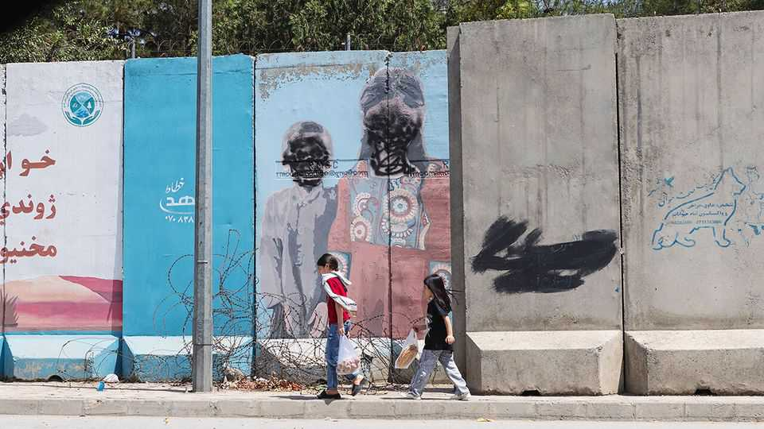
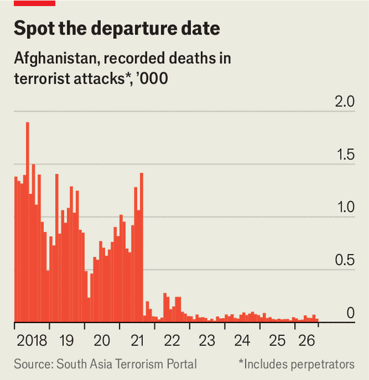
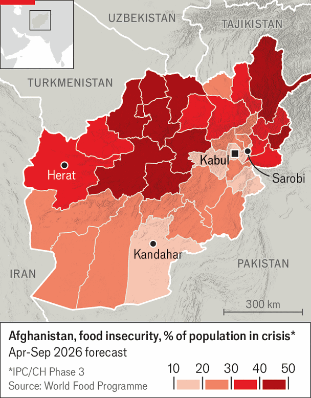
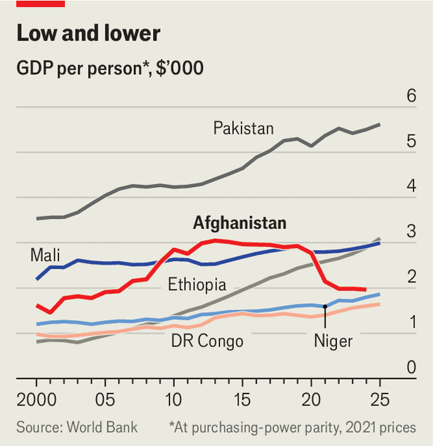
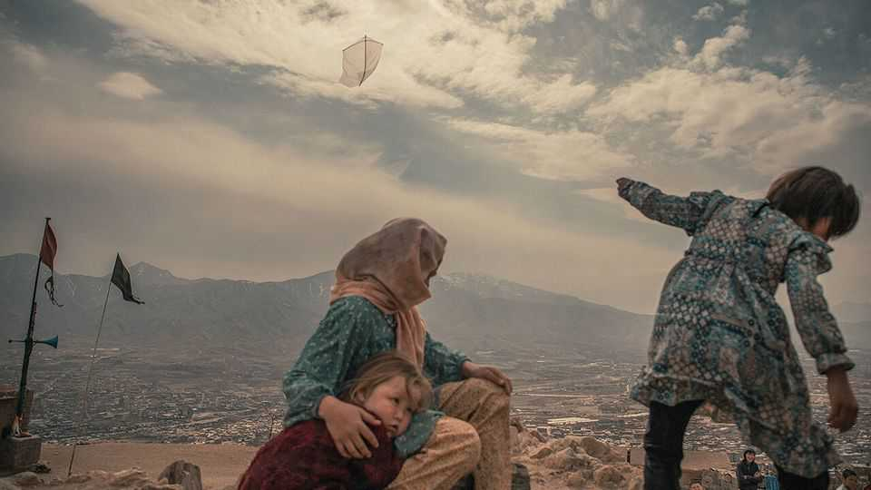

Under the Taliban, Afghanistan is, for once, peaceful
Also very hungry, poor and repressed

Aug 13th 2026
THE cafés on foreign-ministry road in the heart of Kabul’s government district used to blare out Afghan pop to attract a gossipy crowd of civil servants. No music comes from them now—or from anywhere else. It is banned. Men bustle along the street in traditional shalwar kameez, sporting long beards. Where a colourful mural used to be there is now a giant slogan in Dari, the local dialect of Persian: “There is no god but Allah”. Next to it a man in black fatigues lounges in the turret of a captured American Humvee, fondling a machinegun and keeping a lazy eye on the lunchtime traffic.
On August 15th it will be five years since the Taliban swept back into Kabul. For 20 years they had been fighting against the government, its American backers and some of America’s allies. The war began in 2001, when America toppled the Taliban’s first government because it had provided sanctuary to the terrorists who planned the attacks of September 11th. By the time it ended in 2021 it had become the longest America has ever waged. The regime America had backed collapsed like a house of cards as the superpower turned tail. The Taliban returned with a free hand.
Travelling from Herat, in the west of the country, to Kandahar, in the south, and on to Kabul in the east shows how they have secured their grip. On the 1,000km trip your correspondent saw the black-and-white Taliban flag flying in town squares and in fields of wheat, at roundabouts and remote checkpoints, on the desks of university professors and in the boardrooms of CEOs.
Tired of war, Afghans have welcomed peace. Cities which used to ring to the blasts of suicide-bombers feel surprisingly calm. “This is the second summer that birds have returned to Kabul,” says a former government official, pointing up to the trees in his garden.
The observation suggests that wildlife is more easily reconciled to the new situation than international opinion. Though various countries have embassies in Kabul, only one foreign government—Russia’s—recognises the Islamic Emirate. The Taliban control ministries, taxes, borders and the army, but are shut out of the global financial system because many cabinet members remain under sanction as terrorists. Their grotesque ban on education for girls over 12 cements their outcast status.
The Taliban have established a reasonably stable peace and are running a modern state much better than they did in the 1990s. Then their leaders knew little of life beyond their Pashtun villages in the south of the country. Now many have seen the wider world, in particular the Gulf states where many spent time during the war.
But they have no way to court investment. And both economic and military power is increasingly being consolidated around Haibatullah Akhundzada, the emir, who governs not from comparatively cosmopolitan Kabul but from the Pashtun city of Kandahar. He is, even by Taliban standards, extraordinarily extreme.

Stability after decades of war is not nothing. But Mr Akhundzada’s government does not offer the country’s fast-growing population of 45m—almost two-thirds of whom were not yet born in 2001—anything that remotely resembles a path to prosperity. Many of them find their lives getting worse in material terms. All of them—especially the women—have had freedoms curtailed (people inside the country mostly spoke to The Economist only on condition of anonymity). They constantly weigh small freedoms against the risk of punishment.
The Taliban government has some resources. It has preserved much of Kabul’s professionalised bureaucracy along with the computer systems that deal with taxation, borders and customs (though in June the emir banned the use of smartphones in government offices). Some officials chose to flee. But there was no great purge; more than half the republic’s civil servants remain, according to people in and around the government. Continuity of expertise helped the central bank to preserve the strength of the Afghani and keep inflation under control.
The government now takes in around $4bn in taxes and other revenues each year, according to the World Bank, almost 60% more than in 2020. The increase came from raising duties and cutting graft. In its latter years the previous government had become so corrupt that it “rotted from the inside”, says a minister who was part of it and who still lives in Kabul. Afghans say that the low-level extortion which was then a part of daily life is now largely gone.
The growth in revenues, though, is smaller than the fall in aid. Humanitarian and development aid ran at around $4bn in 2020. When the Taliban took power, aid to the government cratered, but much of the harm was offset by an increase in humanitarian assistance through other channels. That has now been cut too. In 2025 it was just $1.2bn; this year’s figure will be lower, probably a lot lower. The country’s hospitals and clinics are thus being defunded, as the government has cut money for health and welfare in order to spend fully half of its revenue on security.
Five years in, Taliban ministers reportedly say in private that they remain “in a control situation”, which means security is paramount. They have got results. Last year fewer than 100 civilians were killed in terrorist attacks, according to the South Asia Terrorism Portal, which collects such data (see chart). The government has clamped down on the once fearsome Islamic State Khorasan Province. Al-Qaeda has wound down its operations in the country. In July opposition groups mounted a string of attacks and claimed to have killed more than 20 Taliban fighters. Such resistance might grow. But the attacks were small and easily quelled.
There has been one significant exception to the crackdown on terrorist groups—at least, so the Pakistani government says. A group with a presence in Afghanistan called the Pakistani Taliban carries out attacks in Pakistan. Pakistan accuses the Taliban government of sheltering the group, and its air force has struck targets inside Afghanistan. Pakistan has also closed the border between the two countries. That has raised food prices in Afghanistan and closed off access to export markets and medical treatment.

In reducing Afghanistan’s violence, the Taliban have one huge advantage: they do not have to fight the Taliban, who used to perpetrate most of it. This irony does not undercut the benefit to the general public. Afghans are quick to say what a difference peace has made: farmers can get their goods to market; boys (and, when allowed, girls) can walk to school; taking long drives to visit family or see the country are no longer an aberrant choice.
There is, though, a price paid through repression. The security forces respond brutally to any open dissent. In a recent visit to Herat, which has large Tajik and Shia Muslim populations, a government minister singled out the police there as an example to others, according to two locals briefed on the discussion. The exemplary work he was praising was the suppression of a protest in June by women angry at a crackdown by the vice-and-virtue police. Many protesters were beaten. One teenager was shot dead.
What the government does not spend on men with machineguns appears to go on motorways and mosques. Major cities are still, for the most part, linked by two-lane, occasionally rocky roads. But on the drive from Kandahar to Kabul you will enjoy bursts of freshly laid asphalt. Mosques are being built every 70km or so, by decree.
In Kabul roads are being widened, and private residential construction is rising, much of it financed by the diaspora for relatives who remain. Elsewhere the government is investing in canals, gas pipelines and solar parks, and handing out licences for mining gold, copper and lithium, mostly in the north of the country. Abdul Qahar Balkhi, a spokesperson for the ministry of foreign affairs, says the Taliban’s vision is to turn Afghanistan into a “space of positive competition”. If peace holds, he and his colleagues argue, surely Afghanistan will begin to prosper.
If so, it has a very long way to go. The country’s GDP per person fell sharply after the Taliban came to power. At purchasing-power parity it is now just $2,300, roughly what it was in the mid-2000s (see chart). Only a handful of mostly conflict-ridden countries in sub-Saharan Africa are worse off. Many Afghans are hungry. Prolonged drought makes food scarce; there are long queues at wells in Kabul. “Lots of children we encounter are living on bread and tea,” says one of the reduced band of aid workers.

In Sarobi, a mud-brick town set among scattered villages in the mountains east of Kabul, locals say that they have only just enough food. A lot of people are getting into debt to survive. “We have peace, but our pockets are empty,” says Razi Khan, a village elder. For many households the most pressing problem is a lack of work. Hassan, a 25-year-old who was a soldier in the previous government’s army, has been looking for a job since the Taliban returned to power. What jobs there are—like labouring on a local solar project—require vetting by a Taliban commander, he adds.
These problems have been worsened by the forced return of some 6m Afghans, many penniless, from Pakistan and Iran. “It has put severe strain on the resources of a country that was already close to the edge,” says Arafat Jamal of UNHCR, the UN’s refugee agency. Most of those pushed out by Iran hail from poor villages in the north of Afghanistan, which for years have survived on seasonal fruit-picking work across the border.
Though many Afghans have grown inured to conditions of poverty and hardship, there is one topic about which they express bitter disappointment: education. Between 2001 and 2021 school enrolment rose, particularly in cities. It was far from universal—the current literacy rate is just 37%—but parents had begun to see boys and girls going to school as the norm.
The Taliban’s ban on girls’ secondary education is thus opposed by the vast majority of Afghans—and by most Talibs, according to a lot of people The Economist talked to. There is nothing most of them can do about it. But the authorities in some cities have created a workaround for some of the better-off by issuing licences for madrasas, or religious schools, to educate girls over 12 as well as boys.
In a converted three-storey house in Kabul with small, ramshackle classrooms and moth-eaten carpets, the principal of one such institution says he is educating 600 girls. The standard fee is 1,000 Afghanis ($15.20) a month (some poorer families pay less), for which the girls get four hours of teaching by female teachers six days a week. The girls wear black abayas and purple headscarves. The four 16- and 17-year-olds who told your correspondent how happy they were to be back in school did so through covid-style masks, because women’s mouths must be covered.
Technically, the whole enterprise is above board. Still, everyone speaks in hushed tones, as if talking about it—in particular the fact that it is not a strictly Islamic education—might make it vanish. The girls say that the school is better than the public ones they went to before 2021. They are pleased that they get to study maths, science, geography and English (which they all speak well) as well as Islamic studies, which they enjoy.
One, Diwa, says she is sorry many of her friends cannot afford to attend. They all say they are frustrated that they will not be allowed to make much of the precarious education they are getting. “We don’t want to just sit at home and raise children, or be a teacher in an Islamic school,” says Nadia. “That was not our dream.”
The chief canceller of dreams is the man in Kandahar whom some diplomats in Kabul call the Wizard of Oz. Mr Akhundzada, who is thought to be around 60, does not, as far as is known, stay hidden behind a curtain, but he is very rarely seen in public; the most recent verified photos of him were taken decades ago. A former cleric and sharia judge, during the war he championed the Taliban’s shift towards suicide-bombing, allowing one of his sons thus to murder people in 2017.

Mr Akhundzada has imposed a version of sharia law that vanishingly few other Muslims would seek to justify, one which includes strict sex segregation, strong dress codes and the erasure of women from public life. His broadcast speeches make clear that he sees women’s rights, and non-religious education for anyone, as the work of Satan. “He thinks the outside world is essentially poisoned, and is taking Afghans away from the path of sharia and God,” says a diplomatic source in Kabul. “His view is basically ‘switch it off’.” Adam Weinstein of the Quincy Institute, a think-tank, argues that the Kandahari faction may believe that more aid and foreign investment would only strengthen the influence of its rivals. Harsh decrees and isolation, on the other hand, help make clear, and thus maintain, the emir’s iron grip.
They are not the only tools to that end. The emir has made sure that ministers in Kabul have deputies who report to him. He directs the white-robed vice-and-virtue police, the regime’s primary mechanism of social and institutional control. Bypassing the finance ministry in Kabul, he has established control over some revenues from mining. And in the past six months, arguing that tensions with Pakistan require it, he has built up a force of 8,000 fighters in Kandahar that sits outside the army’s chain of command and has a strong whiff of the praetorian about it.
There were sincere hopes that the return would not go Mr Akhundzada’s way. Many of the moderate Talibs now based in Kabul believed that the second emirate could emulate the shining examples of Islamic modernisation they had seen in the Gulf without sacrificing their beliefs. For a time there were rumours that less reactionary figures—notably Sirajuddin Haqqani, the interior minister and leader of a powerful faction—would challenge the emir. Now unhappy Talibs have closed ranks, perhaps unsure that they can win, perhaps because whatever concerns they have come second to remaining in power.
There is thus no obvious alternative to more regressive policies and further isolation. The state of health care shows what that costs. The Taliban have insisted on segregating male and female patients and doctors, have pushed female doctors out and have prevented women from undertaking medical training. The result has been predictable: a chronic lack of care for women. A survey by Refugees International, a charity, found that maternal mortality in Herat in the first half of 2026 was five times higher than in the same period the year before.
Another indicator is emigration. A professor whose entire faculty has been cleared of women (and whose educated wife is unable to work) says that regressive policies have already caused a huge brain drain. Unless they change, that draining will speed up. “We have stayed, hoping things would get better, but soon we will start trying to leave,” says the professor. Though Iran has turned hostile towards Afghan migrants, many Afghans are still attempting to escape across the Margo desert. Marg is the Persian word for death, and the landscape meets its billing.
But if some leave, most have no choice but to stay. Some Talibs still insist that things will ease up in time. But many Afghans feel impatient. “It has been five years,” says Diwa, the student. “We don’t want to wait.” ■